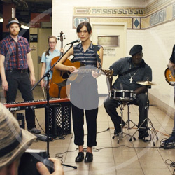
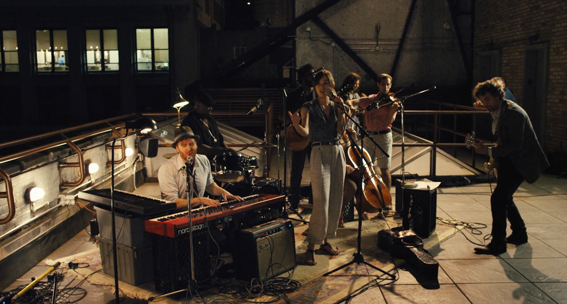

본문콘텐츠영역
Story
Singer-songwriter Greta (Keira Knightley) has a boyfriend of five years, Dave (Adam Levine). After signing with a major record label. and musical partner, we make songs together. And unlike Greta, who liked to sing with her, Dave's heart as a star...
Actors
- Mark Ruffalo
- The star record producer, but now fired Dan (Mark Ruffalo), with a desire to die from family problems family problems, caught up in dreams and fantasies now caught up in dreams and fantasies nowfired Dan (Mark Ruffalo)up in dreams
- Keira Knightley
- inger-songwriter Greta (Keira Knightley) will move to New York after break will move to New York after break with boyfriend New York after break with boyfriend signed a contract with a major signed a contract with a majorrecord
- Catherine Ann
- The wife for the star record producer, but now have conflict with Dan (Mark Ruffalo), busy work and a desirebusy work and a desire busy work and a desirebut now have conflict busy and a desirebut now have and now fired Dan
- Mos Def
- perior to the co-builder of the producing company, he is a friends of star record producer Dan (Mark Ruffalo), But now he conflicting with him, and conflicting with him,now fired Dan But now he conflicting with him, and now fired Dan
Albums
-
-
Lost Stars
( Adam Levine ) -
Please don't see just a boy caught up in dreams and fantasies
... 자세히 보러가기
Please see me reaching out for someone I can't see
take my hand let's see where we wake up tomorrow
best laid plans sometimes are just a one night stand
I'll be damned Cupid's demanding back his arrow
So let's get drunk on our tears and 노래가사 스크롤업 노래가사 스크롤다운
-
Lost Stars
-
-
No One Else..
( Adam Levine ) -
Is everything just right Don't want you thinking
... 자세히 보러가기
that I'm in a hurry I won't stay afraid I had this vision that
has got me worried Cause everyone wants someone
That's one cliche that's true The sad truth's I want no one
Unless that someone's you It looks like you feels like you
smiles like you I want someone just like you 노래가사 스크롤업 노래가사 스크롤다운
-
No One Else..
-
-
A Higher Place
( Adam Levine ) -
I don't know why I don't see happiness in this town
... 자세히 보러가기
Everyone I meet seems so uptight wearing their frown
What good's living where dreams come true if nobody smiles
Everyone's chasing the latest star the latest style You take me to
another space in time You take me to a higher place
so I'm about to get out of the race I don't mind You ought to know that 노래가사 스크롤업 노래가사 스크롤다운
-
A Higher Place
-
-
Tell Me If'u.
( Keira Knightley ) -
Maybe You don't have to smile so sad Laugh when you're feeling bad
... 자세히 보러가기
I promise I won't Chase you You don't have to dance so blue
You don't have to say I do When baby you don't Just tell me
The one thing you never told me Then let go of me Hell just throw me
Maybe if you wanna go home tell me if I'm back on my own
Giving back a heart that's on loan Just tell me if you wanna go home
노래가사 스크롤업 노래가사 스크롤다운
-
Tell Me If'u.
-

-
Like A Fool
( Keira Knightley ) -
We take a chance from time to time And put our necks out on the line
... 자세히 보러가기
And you have broken every promise that we made And I have loved you anyway
Took a fine time to leave me hangin' out to dry Understand now I'm grievin'
So don't you waste my time Cause you have taken All the wind out from my sails
And I have loved you just the same We finally find this then you're gone 노래가사 스크롤업 노래가사 스크롤다운
-
Like A Fool
-
-
You Can't.
( Keira Knightley ) -
So you find yourself at this subway with your world in a bag by your side
... 자세히 보러가기
and all at once what seemed like a good way you realize is the end of the line
For what its worth... here comes the train upon the track there goes the pain
it cuts to black are you ready for the last act to take a step you cant take back
taken all the punches you could take took them all right on the chin
and though the camels back is breaking again again for what its worth 노래가사 스크롤업 노래가사 스크롤다운
-
You Can't.
Gallery
Singer-songwriter Greta (Keira Knightley) has a boyfriend of five years, Dave (Adam Levine). After signing with a major record label he moved to New York together. But for a while, as a long-time lover

- 